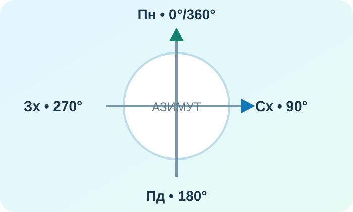

Станція A — Обрати джерело
Потрібно перевірити, як змінилася берегова лінія водойми за 15 років. Що найкраще?
Мета уроку — не переписати контрольну, а зрозуміти, де саме збився алгоритм: джерело → карта → напрям → масштаб → легенда → доказ.
Позначте твердження, яке найкраще описує труднощі після ДТР‑1. Сторінка підкаже, яку корекційну станцію пройти першою.


Доказове питання: чому ці три зображення не можна вважати взаємозамінними джерелами?
Потрібно перевірити, як змінилася берегова лінія водойми за 15 років. Що найкраще?

Який азимут відповідає східному напрямку?
На карті 4,2 см. Масштаб 1:250 000.
На тематичній карті темніший відтінок означає більше значення показника. Чи можна сказати, що темніша область обов’язково більша за площею?
На OpenStreetMap знайдіть Запоріжжя. Визначте два об’єкти, що позначені умовними знаками, і поясніть, яку інформацію про них карта не дає без додаткового джерела.
Перегляньте коротке повторення про читання карти. Під час перегляду випишіть три кроки, які допомагають уникати механічних помилок.
Учень каже: «На карті масштабу 1:500 000 об’єкти зображені детальніше, ніж на карті 1:50 000, бо число 500 000 більше».
Питання: що надійніше — запам’ятати правильну відповідь чи відновити правильний алгоритм?
Повторіть §§1–13 лише за тими пунктами, де сьогодні була помилка. Для повторення використайте Всеукраїнську школу онлайн. Запишіть одну помилку у форматі: «я думав(ла) → правильне правило → як перевірю себе наступного разу».
Тест відкривається тільки після введення імені, прізвища та класу.